For my trip to Senegal, I traveled through Copenhagen, Denmark to visit my host parents. This trip to Denmark was my first since I lived there in 2004. I have to admit that when I stepped off the plane in Denmark and proceeded to exchange money, buy a train ticket, get lunch and so forth all in Danish it was a truly odd feeling. Coming back to a place I knew so well, thousands of miles from "home" is so strange. Seeing my host parents again, the house I lived in, the pets, the host siblings. Wonderful, and yet sad at the same time. Wonderful, because I got to see them again, sad because I don't get over to Denmark anywhere near often enough. It reminded me just how much I miss Denmark.
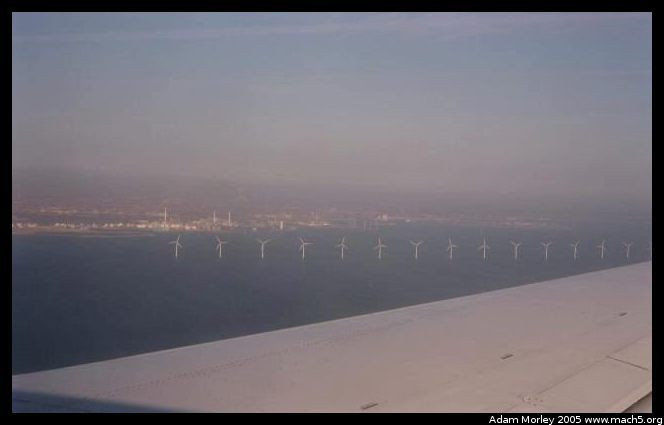A photo of the famous windmills outside of Copenhagen harbor. Taken on my way from back from Dakar/Brussels. I am very tired and in need of a quality shower at the moment I took this picture. And my tummy hurts. The wing is obviously the wing of an Airbus flown by SAS.
My host mom (Britta) and I went to see the new opera house, as it recently opened. I saw it under construction while I was living in Denmark.
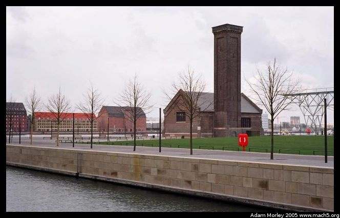An old building on Copenhagen harbor, near the new opera house.
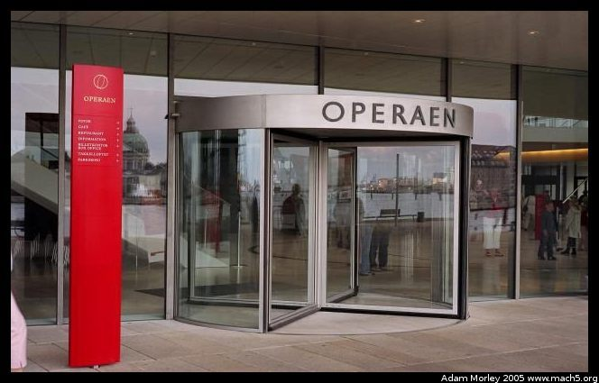The entrance to the new opera building. Operaen means "The Opera." En opera would be "a opera." Danish puts definitive articles at the end of nouns. It's neat like that.
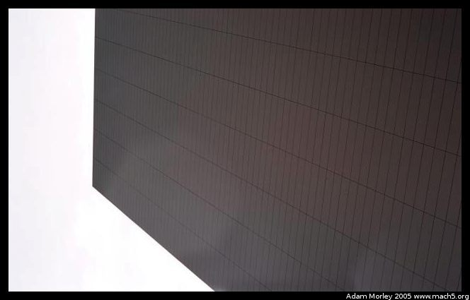The roof of the new opera building is highly cantilevered. Reminded me of Falling Water and other Frank Lloyd Wright buildings.
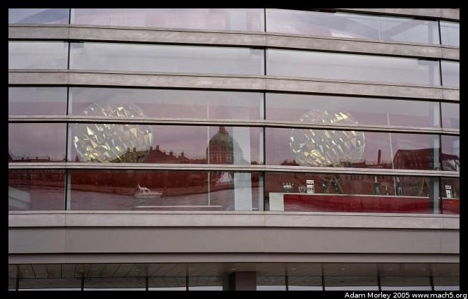Reflections of the harbor, and the marble church in the front of the opera house.
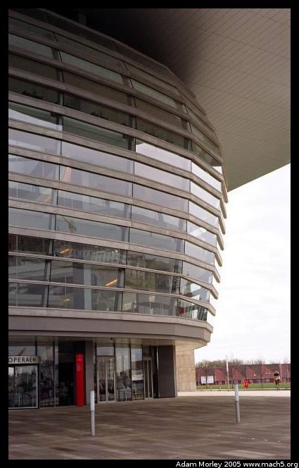The building has bands of steel offset by panes of glass, under a roof of metal.
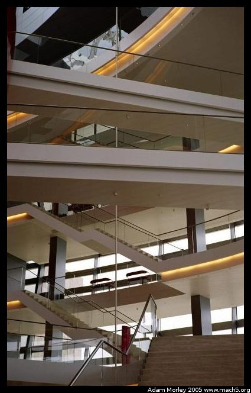The interior is a mass of balconies, staircases, and gangways. Wonderfully light inside, though the entryway itself is very shallow. As my host mother put it, "It kind of hits you in the forehead."
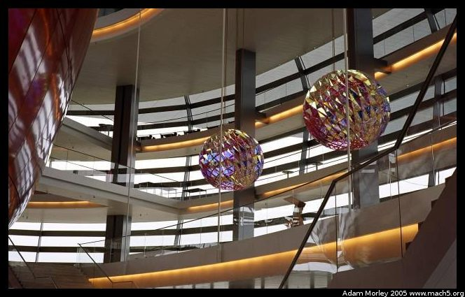The balls on the inside. The wooden paneling is the opera hall's outer shell. It follows the curvature of the outside of the building, which is quite smart, but it's just a wee close to the door.
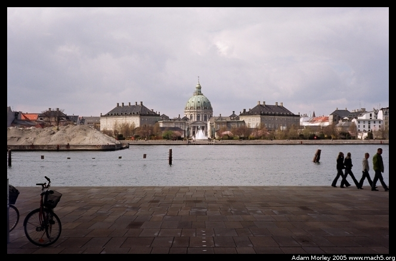The Marble Church and the Queen's Castles from in front of the opera.
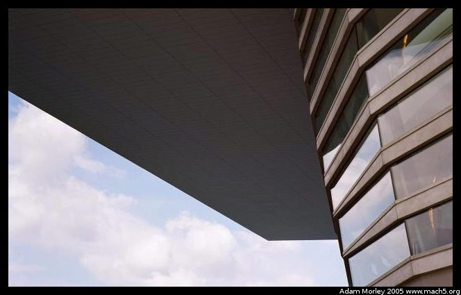My attempt at being "artsy-fartsy."

This is a new apartment complex near the opera house. The area around the opera house has seen a number of new, expensive apartment complexes. This one actually has a harbor inside the building, so you can drive your boat up and park it and go inside. The ultimate Danish apartment.
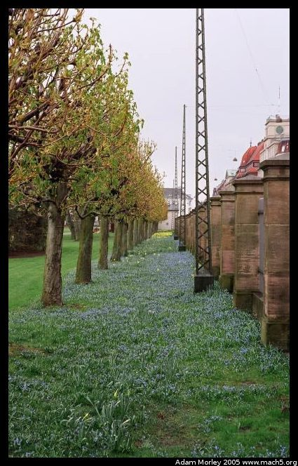Later, my host mom dropped me off and I went for a walk around the city. The flowers were just beginning to bloom in the King's Garden.
I spent some time with the host family, and even learned to make some Danish food. Then I headed back to the USA after about two and a half weeks abroad.
Adam can be reached at adam dot morley at gmail dot com